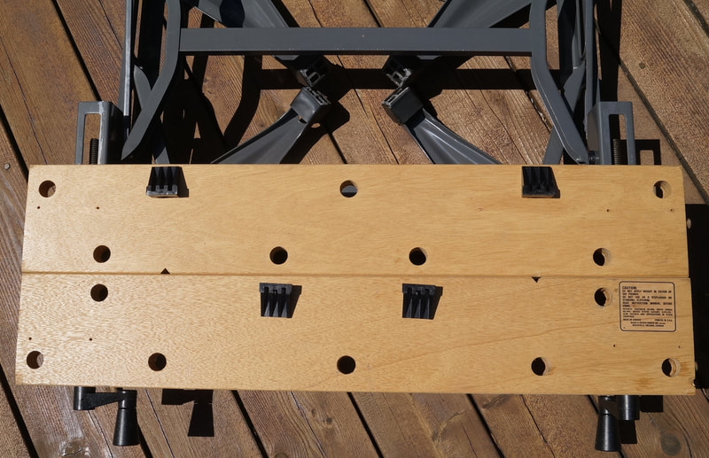
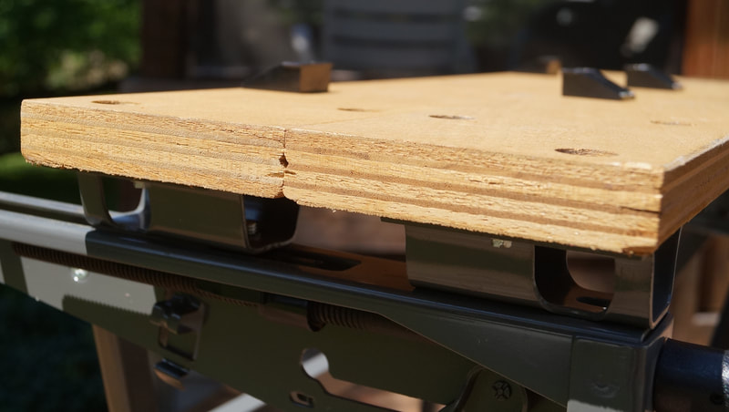
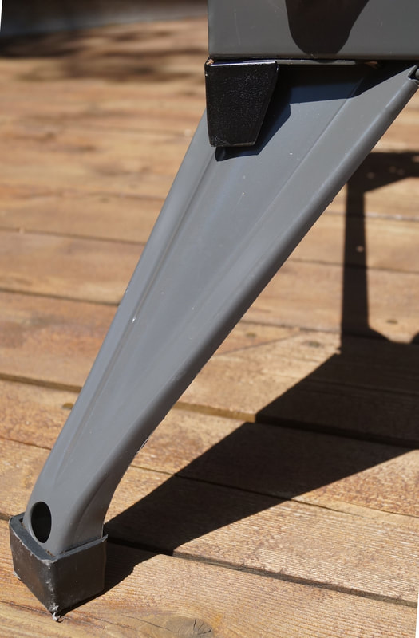
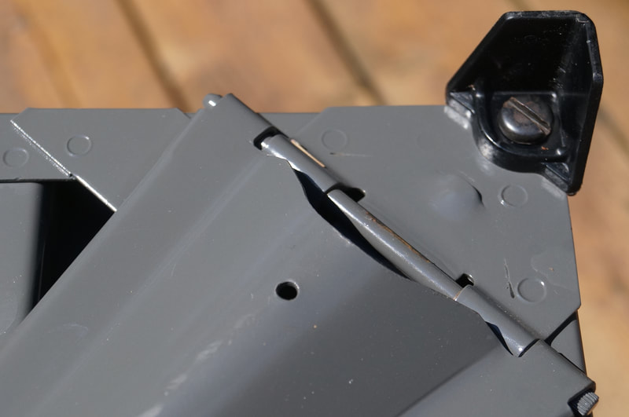
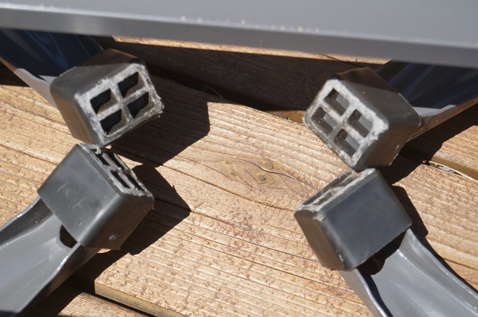
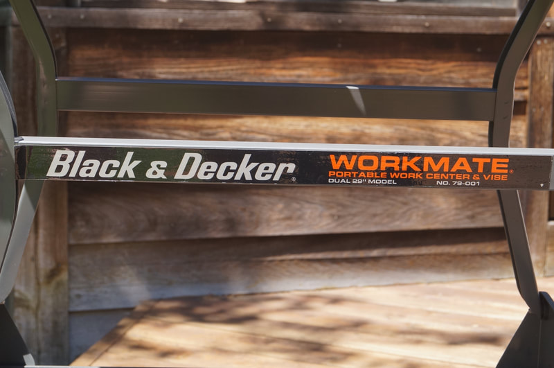
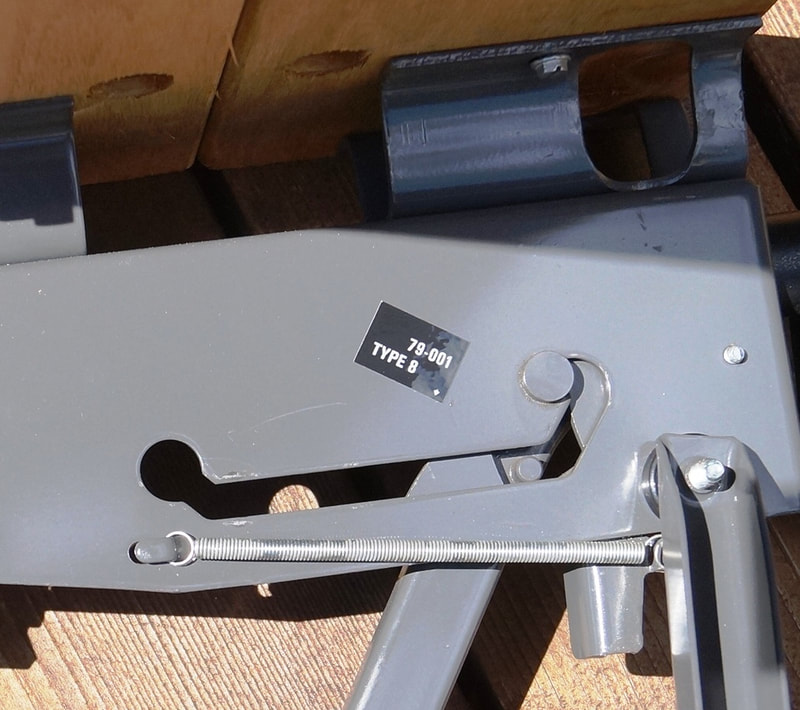
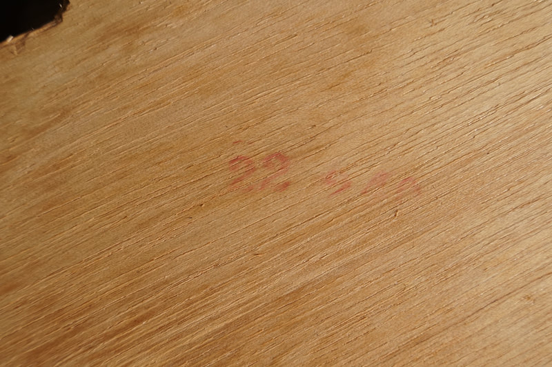
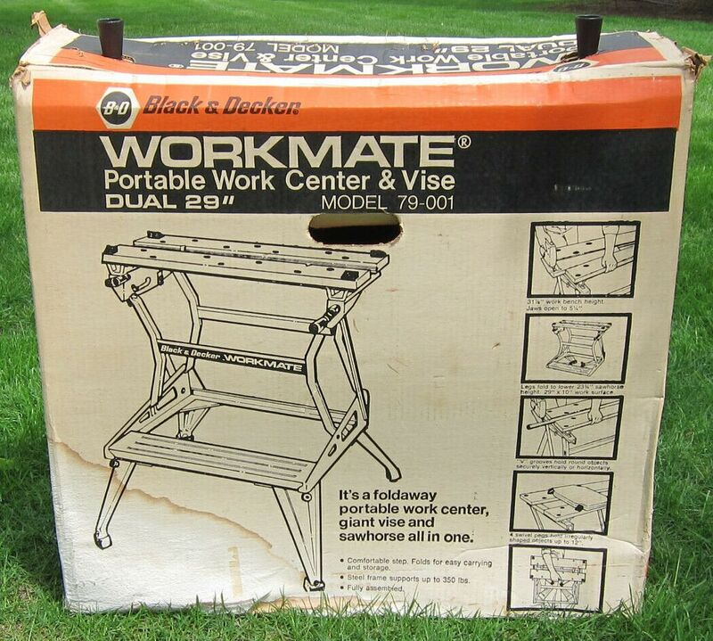
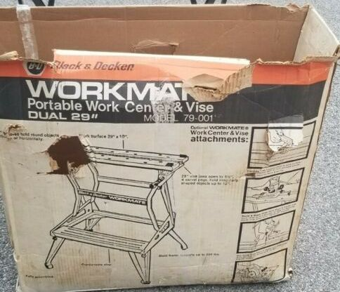

How to Recognize It
The four slip-on feet on the legs and the steel U-bracket jaw mounts identify a Type 8.
See the gallery of detail photos below. The Workmate 79-001 Type Study spreadsheet shows how all ten Types compare.
Black & Decker Workmate 79-001 Type 8
The changes from the Workmate 79-001 Type 7 to the Type 8 involved only the feet.
Notable Characteristics
The changes for the Type 7 carried forward to the Type 8:
Component Changes During Production
A year-and-a-half run, and no parts were changed!
Notable Characteristics
The changes for the Type 7 carried forward to the Type 8:
- The steel top-release levers
- The textured plastic vise handles and arms
- The oak-veneer plywood that was introduced late in the production of the Type 7 continued to be used intermittently on the Type 8 (alternating with MDF and occasionally the earlier 17-ply plywood as well).
- The same style cross-bar label and white-on-black Type sticker
- The single remaining screw-in foot, located on the right rear leg on the Type 7, was replaced with a fourth slip-on rubber foot, eliminating any way to level the Workmate for either height setting.
- The rubber bumper feet on the upper part of the legs, used for the sawhorse height setting on the Type 6 and 7, were discontinued. The holes for the bumper feet are still there.
- The sawhorse height now uses what Black & Decker called a "corner foot". This is a fixed right-angle piece of black plastic mounted on each of the lower corners of the frame with a 5/16-18 screw using the same holes that were originally used for the adjustable screw-in feet.
Component Changes During Production
A year-and-a-half run, and no parts were changed!
Click on any image below to open the gallery of full-screen images.























